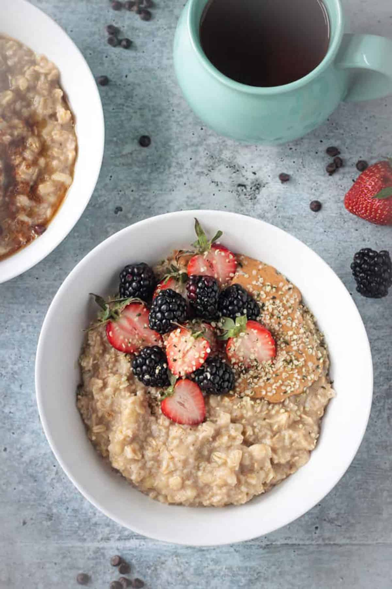

oatmeal recipe

description
here is a paragraph or two describing the recipe
ingredients
- plant-based milk
- water
- instant oats
- ripe banana
- frozen berries
- hemp hearts
- almond butter
steps
- chop 1/2 ripe banana into small pieces and throw into the pot
- pour 1/2 cup of plant-based milk and 1/2 cup of instant oats into the pot (add splash of water too)
- add frozen berries close to the end, cook for approximately 5 minutes on medium-heat and stir constantly
- top with hemp hearts and almond butter